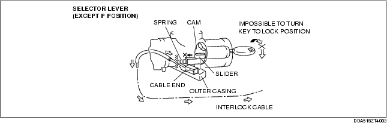
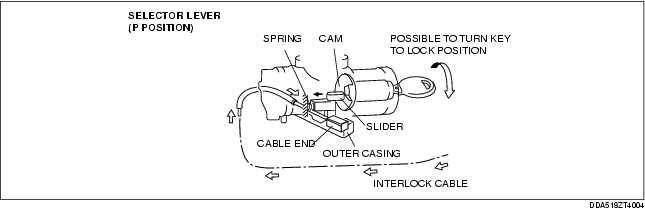

KEY INTERLOCK SYSTEM OPERATION
id051800100600
• The key interlock unit is composed of the interlock cable, cable end, slider, spring, and cam.
• When the selector lever is in a position or range other than P position, the cable end is set at the key-locked position. When the engine is switched off and an attempt is made to turn the ignition switch to the LOCK position, turning of the cam is restricted by the slider because the cable and pushes to the cam side, and the ignition switch cannot be turned to LOCK.
Key-locked position

• When the selector lever is in P position, the cable end is at the key-unlocked position, and because the slider does not restrict movement of the cam, the ignition switch can be turned to LOCK.
Key-unlocked position
